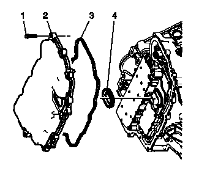
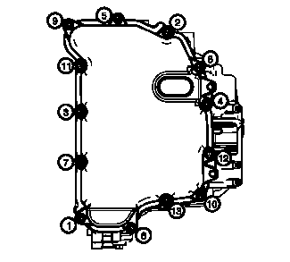

控制阀体盖的更换
拆卸程序
- 1.举升和顶起车辆。举升和顶起车辆。
- 2.排空变速器油。变速器油排放和加注。
- 3.拆下散热器进口软管。参见散热器进口软管的更换、散热器进口软管的更换（LJI, LI6）。
- 4.塞住和/或盖住管和变速器，以防止污染。
-
5.从变速器控制模块 (TCM) 上断开电气连接器 (1)。

-
6.拆下13个控制阀体盖螺栓 (1)。
- 7.拆下控制阀体盖 (2)。
- 8.拆下控制阀体盖衬垫 (3)。
-
9.拆下控制阀体盖线束连接器孔密封件 (4)。告诫：拆下密封件时,支撑连接器附近的控制电磁阀总成。拉力过大会损坏内部电气连接。
- 10.清除旧衬垫材料的所有痕迹。清洁变速器箱和控制阀体盖衬垫表面。
安装程序
-
1.安装控制阀体盖线束连接器孔密封件 (4)。
- 2.将控制阀体盖衬垫 (3) 安装至控制阀体盖。
- 3.安装控制阀体盖 (2)。
- 4.安装13个控制阀体盖螺栓 (1) 并用手同等紧固。
-
告诫：参见 有关紧固件的告诫。5.将13个控制阀体盖螺栓按顺序紧固至12牛米（106英寸磅力）。注意:用手安装控制阀体盖螺栓和双头螺栓，然后依次变矩安装所有螺栓和双头螺栓。
-
6.将电气连接器 (1) 连接到变速器控制模块 (TCM) 上。
- 7.安装散热器进口软管。参见散热器进口软管的更换、散热器进口软管的更换（LJI, LI6）。
- 8.加注并检查变速器油位。变速器油排放和加注。
- 9.检查是否泄漏。